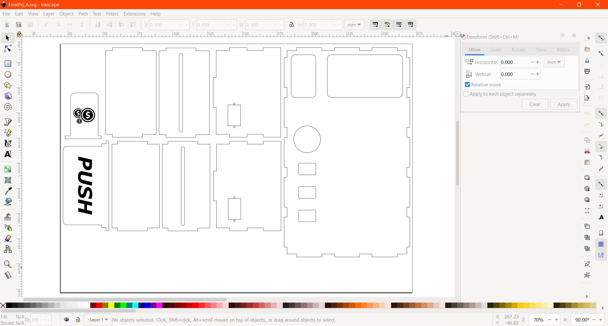
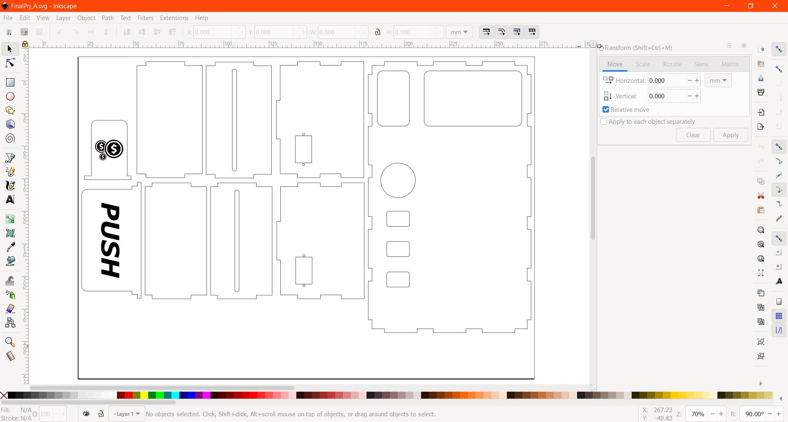

Module Project
Mini Coin Operated Snack Machine
Description
It dispenses snacks(sweets), using a gravity feed magazine, whenever a coin is inserted. After inserting a $1 coin, the user can select between two options through the push buttons. Servos are used to dispense the snack and return the coin.Features
- A PIR motion detector sensor is used to detect the coin inserted.
- Push buttons for users to select options.
- Servo to dispense snack.
- Only $1 coins are accepted. The coin slides through a compartment, it will fall through and get rejected if it is smaller than a $1 coin. (only works for newer coins)
- A mechanism controlled by a servo to return coin if user changed their mind.
Fabrication techniques
| Technique | Makes |
|---|---|
| Laser Cutting | Casing and Dividers |
| 3D Printing | Dispensing Mechanism |
| CAD Design | Hardware design and patterns for engraving |
| Processing System | Arduino Uno or compatable CPU |
| Input Devices | Push Buttons, PIR Sensor |
| Output Devices | Servos, LEDs |
| Power | Single 5V DC plug |
Bill of Materials
| No. | Quantity | Description | Cost (each) |
|---|---|---|---|
| 1. | 1 | Arduino Uno or compatable CPU | $6.10 |
| 2. | 3 | Mini Servo | $2.45 |
| 3. | 3 | 2-Pin Mini Pushbuttons | $0.06 |
| 4. | 5 | LEDs, white x2, yellow x3 | - |
| 5. | 1 | PIR Sensor | $1.50 |
| 6. | 1 | A2 3.5 mm Ply Wood | - |
| 7. | 1 | A3 3 mm Clear Acrylic | - |
Computer Aided Design (CAD)

I started of by creating the base followed by the other sides of the housing, i also created slots for the shelfs and partitions.
After creating an offset plane and sketch,i projected(Create > Project/Include ) the outline and slots from the left and right profile to create the divider.Then i created the back panel.
Next, i designed the front panel which consist of 2 pieces, the first piece is made of wood while the second piece is made of acrylic. I designed openings for the buttons, window, coins and push door.
I made a hole which acts as a hinge for the push door, after that, i designed the push door for the 2 compartments.
I then design the shelfs for the vending machine, i included openings and holes to mount the servo that is used for dispensing.
After that i created more dividers, to seperate compartments and also to hold the snacks.
I made a slope which sorts out $1 from the rest of the coins. The hole i made is slightly smaller than a new $1 coin.
Next i designed a mechanism to return and deposit the coin, i also designed a slot to mount the servo.
I designed a linkage to link the servo to that mechanism and also a housing to house the push buttons and LEDs.
Lastly, i designed an attachment for the servo to push and dispense the snacks. I also designed a movable partition so that i am able to fit snacks of different length.
3D Printing
Go to Tools > Make > 3D Print and select the parts to be printed. Save it as Stl.
Open the stl file in Cura, change the settings and slice it.
Slicing Parameters
- Material : PLA
- Nozzle : 0.4mm
- Layer Height : 0.2mm
- Wall Thickness : 1.0mm
- Wall Line Count : 3
- Top Layers : 3
- Bottom Laters : 3
- Infill Density : 15%
- Print Speed : 50 mm/s
- Enable Retaction : Selected
- Generate Support : Not Selected
- Build Plate Adhesion Type : Skirt
3D Printed parts
Laser Cutting
After finishing the design, i created a new sketch on each profile and save it as DXF.
Open inkscape and go to File > Import to insert the DXF file. The canvas size can be changed at File > Document Properties.
 
